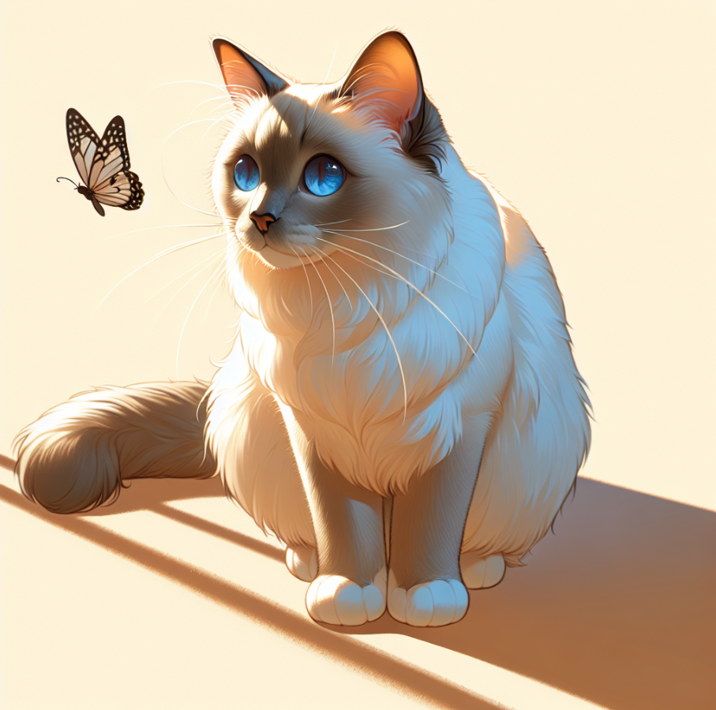
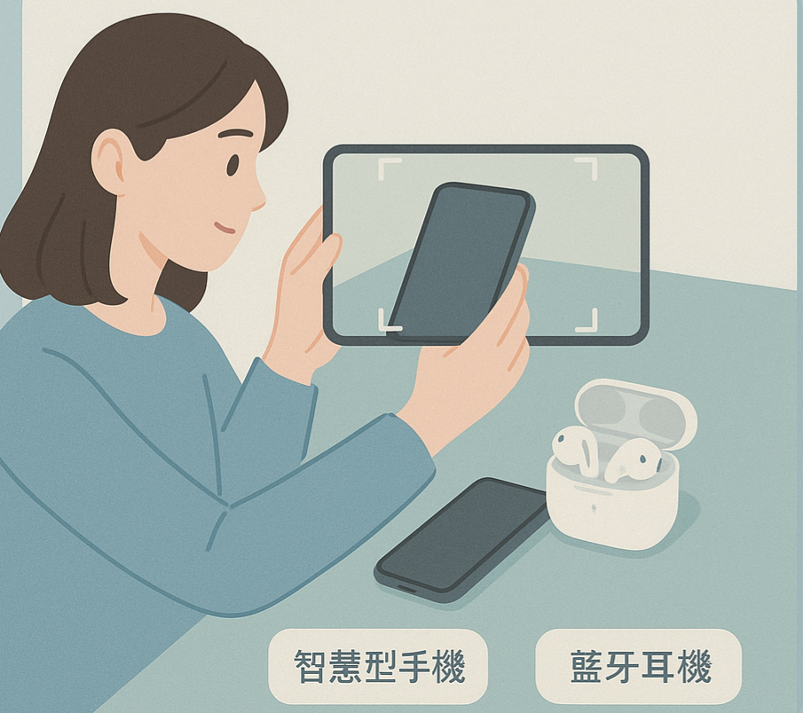
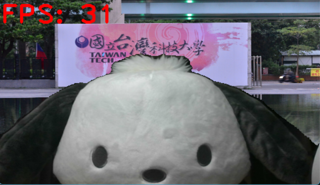
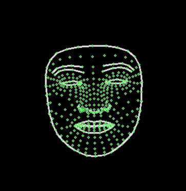

關於我
蔡承洊
企業管理系 大三
Personal website
最高學歷：國立台灣科技大學-企業管理系
輔系：財務金融系
社團經歷
大一：
中區校友會 社員
管樂社 社員
伯爵茶與斯康餅社 社員
大二：
伯爵茶與斯康餅社 幹部-財務
跑班宣傳-總召
新生茶會-副召
社團評鑑-最佳財務獎 第二名
作品集
透過 OpenAI 快速生成隨機的圖片
呼叫 OpenAI 的 DALL·E 3 模型生成一張貓的圖片，並顯示圖片連結與作業資訊
辨識手機和藍芽耳機的模型

模型連結
能夠透過相機識別物件為手機或是藍芽耳機
即時人像分割與背景替換系統
使用者可動態切換背景為指定圖片、純色背景或模糊背景，畫面同時顯示 FPS，以評估系統效能
即時手勢辨識與反應系統
即時擷取攝影機影像並偵測手部21個關節節點位置，程式會根據每根手指的關節向量計算彎曲角度，並藉由角度判斷使用者所比出的手勢種類
即時人臉遮蔽系統
透過攝影機即時畫面中準確偵測出人臉的位置與五官輪廓，並進行視覺化標記，達到隱藏臉部資訊，保護個人隱私
新生茶會企劃書
企劃書連結
規劃新生茶會活動流程
聯絡方式
電話: 886-928030193
E-mail: b11108071@mail.ntust.edu.tw; terry990808@gmail.com